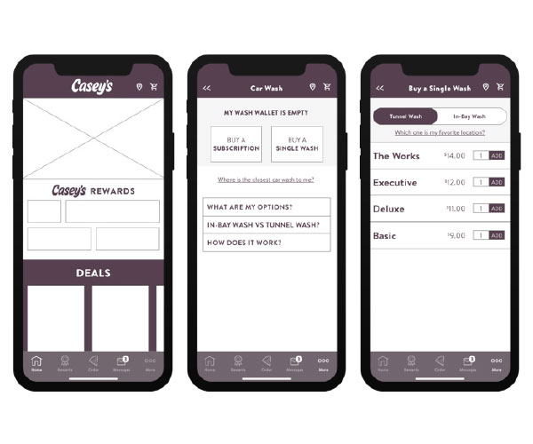
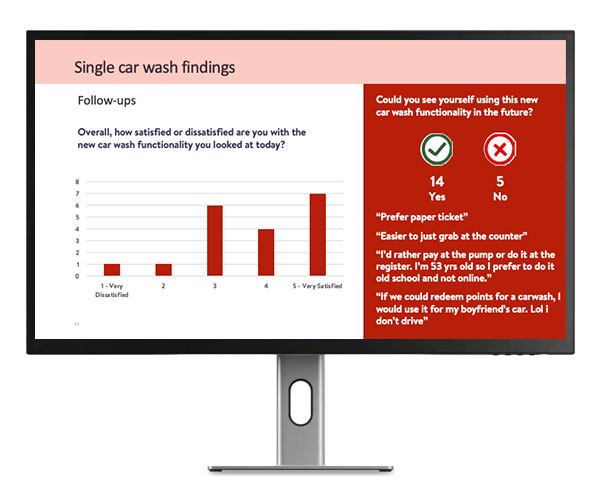
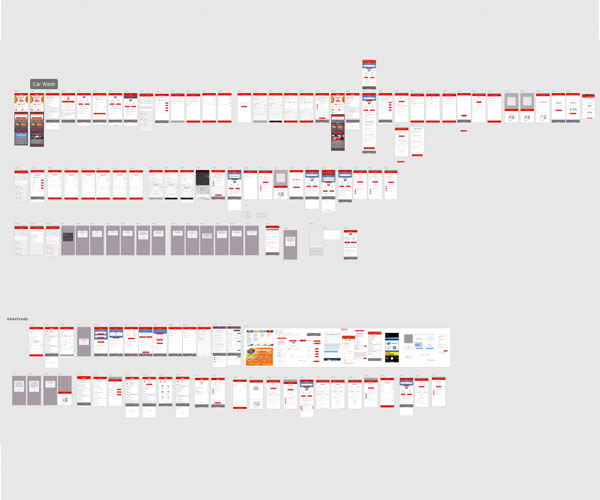
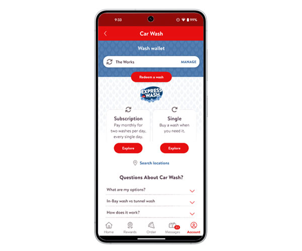

	<section id="carwash">
	<div class="row">
		 <div class="column_half left_half">

<!-- The Target Display Container -->
<div class="targetContainer" style="margin-top: 15px; padding: 10px; border-radius: 8px;">
  
  <!-- Image Element (Hidden by default) -->
  
  
  <!-- Video Element (Hidden by default) -->
  <video class="targetVideo" controls style="display: none; max-width: 100%; max-height: 400px; margin: auto; border-radius: 4px;" onclick="openMediaModal(this)">
    Your browser does not support the video tag.
  </video>
	
<!-- The Buttons <-->
<div class="row text-center">
	<button onclick="displayMedia('_images/carwash-wireframes.jpg', this)"></button>
<button onclick="displayMedia('_images/carwash-testingslide.jpg', this)"></button>
<button onclick="displayMedia('_images/carwash-prototype.jpg', this)"></button>
	<button onclick="displayMedia('_images/carwash-app.jpg', this)"></button>

</div>


</div>

<!--script>
function displayMedia(mediaUrl) {
  const imgElement = document.getElementById("targetImage");
  const videoElement = document.getElementById("targetVideo");

  // Check if the file URL ends with .mp4 (case-insensitive)
  if (mediaUrl.toLowerCase().endsWith('.mp4')) {
    
    // 1. Hide the image, show the video
    imgElement.style.display = "none";
    videoElement.style.display = "block";
    
    // 2. Load and play the local video
    videoElement.src = mediaUrl;
    videoElement.load();
    videoElement.play();
    
  } else {
    
    // 1. Hide the video, show the image
    videoElement.pause(); // Pause video if it was playing
    videoElement.style.display = "none";
    imgElement.style.display = "block";
    
    // 2. Change the local image source
    imgElement.src = mediaUrl;
  }
}
</script!-->
			 
    </div>
		
    <div class="column_half right_half">
      <h2>Car Wash Launch</h2>
		<p class="text-center">	<span class="badge">App design</span> <span class="badge">eCommerce</span> <span class="badge">Usability testing</span> <span class="badge">Landing page</span></p>
	  <p>When Casey’s acquired a car wash business with its own digital experience, we had an opportunity to bring that experience across the Casey’s footprint. I took what was working in the acquired experience and translated it into a cohesive Casey’s experience, while keeping the needs of our guests at the center and branding to match our styles.
		</p>
	  <p>I led two rounds of usability testing using Figma prototypes throughout the process. The first focused on wireframes to validate the overall flow and make sure we had the right experience in place. The second incorporated the final designs to validate the UI and confirm that the experience was intuitive and easy to use.</p>
		<p><a href="_images/carwash-wireframeusabilitytesting.pdf" target="_blank">Wireframe Usability Testing Results</a></p>
    </div>
		
		
		</div>
	
	</section>